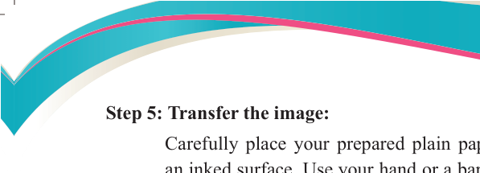
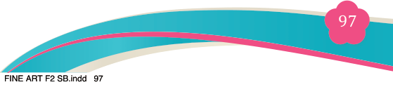
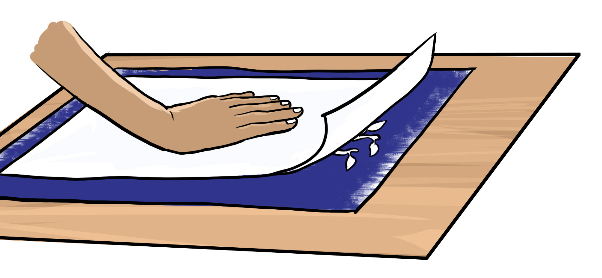
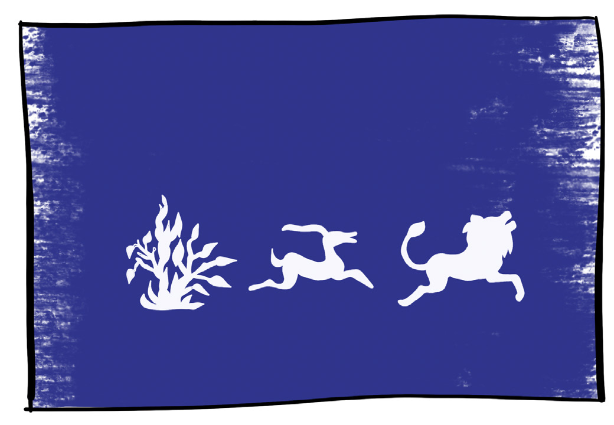

Step 5: Transfer the image:

Carefully place your prepared plain paper onto the cut-out images on
an inked surface. Use your hand or a baren to rub the back of the paper, applying consistent pressure across the entire surface

Figure 5.22: Transferring the stencil monoprint image to the paper
Reveal the print:
Gently peel the paper off the plate, starting from one corner. Place the finished print on a flat surface and allow it to dry completely.

Figure 5.23: A complete stencil mono print technique
Step 6: Creating layers and colour effects
You can print over the same surface using different stencil cutouts or colours
to build a layered, multi-colored image. This adds depth and interest to the artwork.
You can apply multiple stencil cutouts or use various colours on the same
surface to create a layered, multi-colored image, adding depth, texture, and visual interest to the artwork